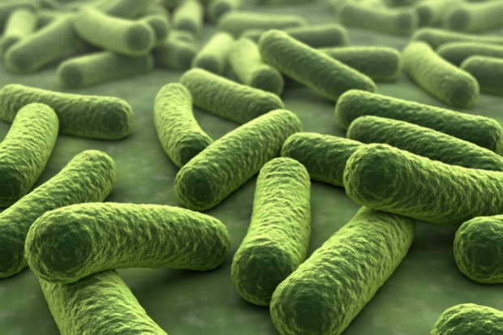
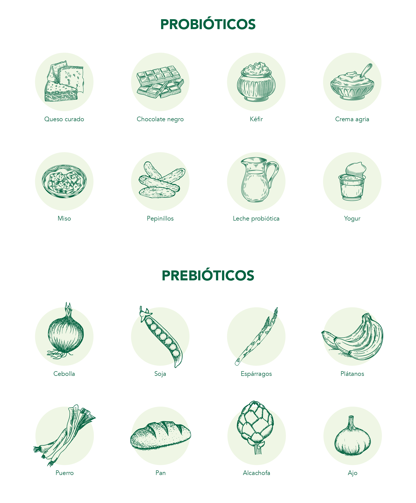

Producto
Tipo: Bebida que combina sabor, textura y funcionalidad.
Composición:
- Banano deshidratado 100% natural.
- Fibra prebiótica (Inulina).
- Palatinose (edulcorante monosacárido, no calórico, sin picos de glicemia).
- 5 billones de Unidades Formadoras de Colonias (UFC) del probiótico Bacillus Coagulans.
Características de los Probióticos
Definición: Microorganismos vivos que confieren beneficios para la salud en cantidades adecuadas.
Bacillus coagulans (LactoSpore®) es un probiótico utilizado en Bananatol.
Rasgos del Bacillus coagulans
- Microorganismo no patógeno/no tóxico.
- Bastoncillo, Gram positivo, formador de endosporas.
- Anaerobio, crece óptimamente a 37 °C y pH entre 5.5 y 6.2.
- Tolerante a ácidos, requiere un ambiente nutricionalmente complejo.
Características de los Probióticos
- Resistencia al ambiente ácido del estómago.
- Germinación y proliferación en el tracto gastrointestinal.
- Producción de ácido láctico como producto primario de fermentación.
- Mecanismo de supervivencia: Exclusión competitiva.

Razones para Elegir Bananatol
- Historial de uso: Uso seguro de bacterias productoras de ácido láctico en alimentos y suplementos.
- Estabilidad de las esporas: Resistente a condiciones adversas, no requiere refrigeración.
- Estado GRAS: Confirmado como Generalmente Reconocido como Seguro por un panel de expertos.
- Efectividad clínica documentada: Estudios clínicos que demuestran su eficacia en salud gastrointestinal.
Beneficios potenciales para la salud:
- Normalización de la flora intestinal.
- Mejora inmunitaria.
- Alivio de síntomas digestivos y afecciones no gastrointestinales.
- Disponibilidad de prebióticos compatibles: Combinación de probióticos y prebióticos para mejorar la salud.
Conclusión: Bananatol con LactoSpore® es una opción probiótica de elección por su historial de uso, estabilidad, estado GRAS, eficacia clínica, beneficios para la salud y disponibilidad de prebióticos.

Definiciones
- Prebióticos: Ingredientes fermentados que mejoran la microbiota humana.
- Probióticos: Alimentos o suplementos que contienen microorganismos vivos para mejorar la microbiota.

Microbiota
Conjunto de microorganismos que habitan en el cuerpo sin causar enfermedad.
Funciones:
- Digestión, producción de vitaminas, protección contra patógenos, modulación del sistema inmunitario.
Regiones de la Microbiota:
- Intestinal, Oral, Urogenital, Piel.
Funciones de la Microbiota:
- Mejora de la digestión, producción de compuestos bioactivos, protección contra patógenos, mantenimiento de la barrera intestinal, modulación del sistema inmunitario.
Conclusión Final: La microbiota es esencial para el equilibrio del organismo, y la disbiosis puede impactar negativamente la salud. Se recomienda el uso de probióticos para balancearla.